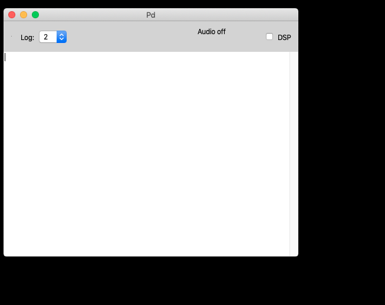
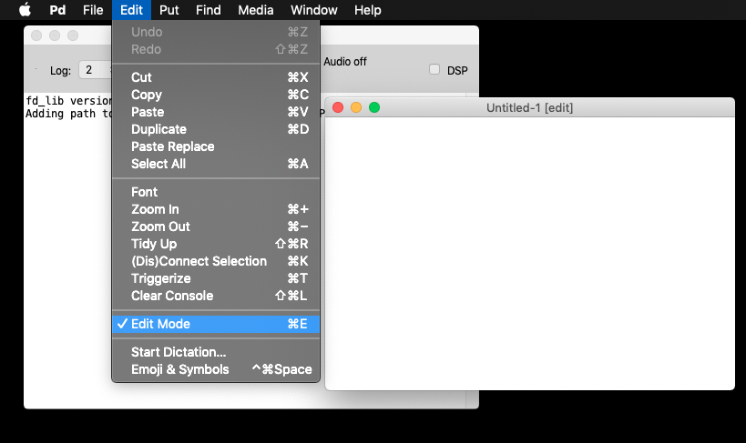

When opening Pd you will see Pd's console window first. This is where important debugging and other messages will be reported by Pd's internal and external objects.

To start a new patch, you either click the menu entry File / New, or use the keyboard shortcut (recommended):
ctrl + Ncmd + NAnother window will appear:
This window is called a patch and sometimes canvas. Within this window (and probably many others) you will make your patches.
It is very important to know where you are located on your computer, and where to save Pd patches. For now we will not worry so much, but as patches get bigger, it gets exponentially more difficult to keep track of important files.
Now, we need to save our patch. Click the menu entry File / Save or use the keyboard shortcuts (recommended):
(linux, win) ctrl + S
(macos) cmd + S
From now on, I'll use
Ctrlto simplify the text. Know that the key will change depending on your platform.
And voilà, you have successfully created and saved your first patch.
Now comes the part when whe actually do something.
Pure Data is such a compact program that it only offers a handful of visual or GUI (Graphicl User Interface) elements to work with. We will use mostly the first three.
These can be summarized in the following FIVE (5) shortcuts:
Ctrl + 1 = ObjectThe object box: it all starts with a dotted box that
allows you to immediately start typing the object name, eg.
print
Ctrl + 2 = Messagehello world.This is also a GUI element that allows you to click on the box to output its contents.
Ctrl + 3 = NumberThe number box: is a GUI box with a clickable number that you can use to click and drag, or type a number to output it.
Ctrl + 4 = List / SymbolThe list/symbol box is a GUI box enabing keyboard input for symbols or list. We will see more of these later.
Ctrl + 5 = CommentThe text comment is there only to guide our future selves and others throught the flow of our program. It is wise to start using them early on. They contribute nothing to the actual program, except documentation and explanations without which our patch may become obscure.
And that's it. Now we can start patching!
The last thing you need to know is that you can interact with Pd in two ways:
You can toggle between these with the Edit Mode
switch, either from the menu entry File / Edit Mode or
(recommended) via the shortcut: Ctrl + E

Sometimes this is called "run" mode, but it is really just "not-in-edit-mode".
A sinewave in 10 easy steps (no mouse involved)
Ctrl + NCtrl + 3Ctrl + 1osc~"Ctrl + 1*~ 0.1" <-- very important for this
value to be 0.1Ctrl + 1dac~"Ctrl + EIf you followed everything to-the-letter, you should have:

If you would like to listen to this sinewave, then you need to turn DSP ON. You can do this via the big DSP button on the Pd Console, or via the shortcuts:
Ctrl + / to turn it ONCtrl + . to turn it OFFIf you finished the Recipe for a sinewave, you can now turn DSP ON and click and drag the number box to change the frequency of the sine wave.